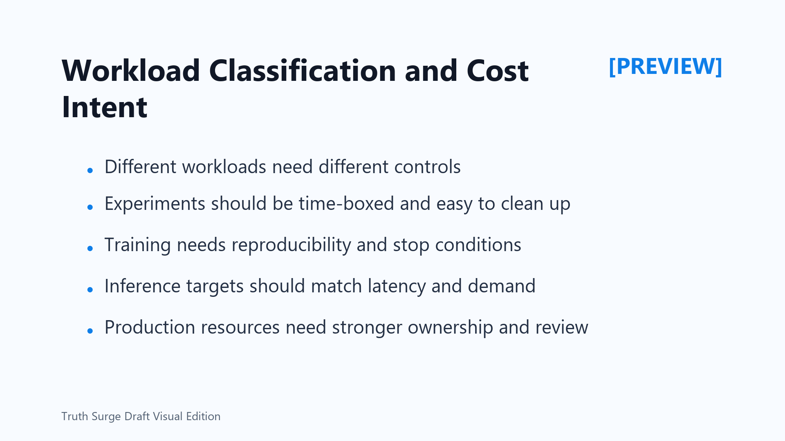

Workload Classification and Cost Intent
Connecting to LMS... Progress: in progress

Narration
Before assigning GPU resources, teams should classify the workload. Not every GPU job has the same purpose. Development notebooks, quick experiments, scheduled training, batch evaluation, data processing, production inference, and urgent operational work each deserve different cost controls.
Experiments should usually be easy to start, time-box, observe, and clean up. The goal is learning. If an experiment becomes important, it can be promoted into a more durable workflow with better tracking. Until then, default limits and automatic shutdown reduce the chance that exploration becomes unmanaged spend.
Training jobs need stronger reproducibility. Teams should know the dataset version, code version, configuration, checkpoint plan, success criteria, and stop condition. A job that cannot be reproduced or evaluated may consume budget without producing a reliable decision.
Inference workloads have a different cost shape. Spend may follow traffic, latency goals, model size, batch behavior, scaling policy, and uptime expectations. The cost target should be connected to service value, not only to hardware utilization.
Production resources should have clear owners, tags, approval paths, and review expectations. Classification lets teams tie controls to business intent. The result is a more useful policy than treating every GPU allocation as if it had the same risk and value.
Classification also helps during review. Instead of asking whether a job is expensive in the abstract, teams can ask whether the spend matches the workload class, the expected learning, the service requirement, or the business outcome.